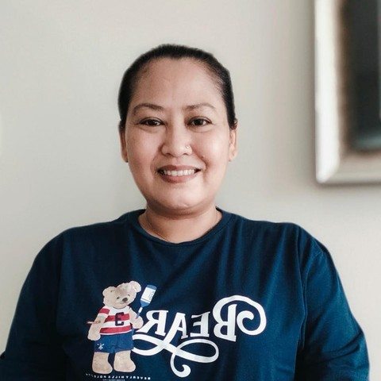

Indonesian · 47 · Cooking, children & household
Ten years with one family, and twenty-one years in Singapore altogether. Five kitchens she can cook from — Indian, Chinese, Western, Malay and Indonesian — from dosa and biryani to rendang, chicken rice and a rack of lamb. Two of her employers are speaking for her, one of them in writing.
“She has a gentle and kind disposition. She is hard-working and polite… She can work independently and is very reliable. I can vouch for her sincerity and work ethic.”
— Madhavi, her employer of a year, in a written reference
Trust signals
Our strongest trust signal — the family she works for now, recommending her directly. We arrange the call once a family has met her and is proceeding seriously.
At a glance
The essentials
Available from
5 December 2026. Transfer within Singapore.
Why she is available
Her employer lives alone and his work has taken him out of Singapore for most of the past year — four months, then two back, then three more. He no longer needs a helper at all, and is putting her forward himself.
Ten years, one household
2010 to 2020 — an Indian-Chinese family with a baby of eighteen months and a boy of seven. She had both children, the cooking and the house, and the grandmother when she came from Malaysia.
Cooking
The widest range on this site. Indian — prata, idli, dosa, chapati, palak and matar paneer, biryani, the curries. Chinese — chicken rice, steamed fish, popiah, duck in black sauce, sushi, stir-fried greens. Western — roasts, pasta, steak, chicken milanese, pizza. Malay and Indonesian — rendang, soto, sate, gado gado, lontong sayur, kue. She cooks pork, and will work from a recipe or a video when a dish is new to her.
Children she has cared for
A baby of eighteen months and a boy of seven for ten years, a boy of four, a girl of two with the school run, and teenagers of sixteen and eighteen.
Indian households
Four of her last five, including a vegetarian kitchen and a Pakistani one where she cooked rack of lamb, chicken pie and salmon alongside the biryani. The cooking comes with her.
Dogs
The household she was with through 2026 had a medium-sized dog: two walks a day, the medicated creams the vet prescribed, and the grooming appointments. All of it set out in her employer’s own letter.
Best fit
A household that eats well and wants one pair of hands to run the place. Children of any age, a dog, and a kitchen that asks for something different each night.
A signed letter from Madhavi, who had her through 2026, and what Mohandas told us this month.
From Madhavi’s letter. “Our lovely helper Sahati has been with us for almost one year. She has a gentle and kind disposition. She is hard-working and polite. She has always been timely in the morning breakfast set-up for school and work. She has not fallen sick since her time with us.”
“She listens to instructions given face-to-face or via phone without any attitude. She can follow simple recipes sent via YouTube and cook nutritious food for my family.”
On the work itself: “Her main tasks in our house included regular cleaning, household chores, laundry, ironing, vacuuming, mopping along with pet care, twice-daily walks for our medium-sized dog, application of medicated creams as prescribed by the vet and grooming visits. She can work independently and is very reliable.”
And at the end: “Due to my husband’s work, we need to relocate out of Singapore so need to terminate her contract… I am happy to recommend Sahati to any family. I can vouch for her sincerity and work ethic. I wish for her to get a loving family who will treat her with kindness.”
From Mohandas, the employer she is with now. He is a single man living alone, and the job has been a straightforward one: the housecleaning, the laundry, the cooking and the marketing. She does all of it independently, he says, with no trouble.
On the cooking: he wanted Indian food and she cooked it, no problem. She loves to cook, and will work from a recipe or a video when something is new to her.
On working with her: give her directions and an explanation and she is fine, including the errands outside the house. Her cleaning, he says, is very good.
He is letting her go only because his work keeps him out of the country for months at a time — four months in England, two back in Singapore, then three more away — and with no one else in the house there is no longer a job to do.
In Singapore for twenty-one years. Her five most recent households, in full.
2008 to 2009. A landed house with two helpers, a couple and four children from teenage upward, and a dog. She had the upstairs and the cooking, shared. She went back to Indonesia at the end of it, to care for her own daughter.
2010 to 2020 — ten years. An Indian-Chinese family with a baby of eighteen months and a boy of seven, both of them hers, with the grandmother visiting from Malaysia. More Chinese cooking than Indian in that house. The longest thing on her record, by a long way.
2020 to 2023 — three years. An Indian vegetarian family with a boy of four. A second child arrived during her time there and a second helper joined the household; when the family moved to a rented house and the costs rose, they kept the other helper and Sahati transferred.
2023 to 2025 — two years. A Pakistani family with a girl of two, the school run from eight until one, and a kitchen that stretched her: Moroccan chicken, teriyaki and butter salmon, rack of lamb with rosemary and garlic, chicken pie in puff pastry, banana cake. The family bought a new house and could not carry a helper as well.
2025 to 2026 — a year. An Indian family from the UK — the parents, a girl of eighteen, a boy of sixteen and a medium-sized dog she walked twice a day. The husband’s work took them out of Singapore, and his wife wrote Sahati a reference as they left.
Before that. Her work in Singapore goes back to 2005, across further households in those earlier years. She is happy to talk any of them through at interview.
Where she’d suit next. A household that cares what comes out of the kitchen. Five cuisines, twenty-one years in Singapore and ten of them in one home, and two employers who say she runs a house without being watched. Children of any age are fine, and so is a dog.
Her employment record and her full work history are available to interested families, with her consent.
Tell us a little about your household and we’ll be in touch within 1–2 business days. We’ll only move forward if it feels like a genuine fit.